Atender um cliente
que já compra.
- Existe receita atual
- Existe urgência
- Existe relacionamento
Prioridade no dia a dia

Mais demanda. Mais controle.
Mais crescimento.
Para indústrias, distribuidoras e fabricantes B2B
Sua empresa já tem representantes para vender para quem já compra.
O Método SAC — Sistema de Aquisição Comercial estrutura um segundo motor comercial para gerar, organizar e desenvolver novas oportunidades B2B enquanto sua equipe continua atendendo e vendendo para a carteira atual.
Dê o play e entenda como os dois motores trabalham juntos.
Responda algumas perguntas sobre sua operação comercial e descubra se o Método SAC faz sentido para sua empresa.
Leva aproximadamente 3 minutosNa voz de quem viveu
Veja o que aconteceu quando empresas que já possuíam produto, clientes e equipe comercial começaram a estruturar aquisição e expansão através do Método SAC.
O gargalo é estrutural
Isso parece contraditório. Mas observe o que acontece dentro de praticamente toda operação comercial B2B.
O representante começa conquistando clientes. A carteira aumenta. E junto com ela aumentam:
Até chegar um momento em que o vendedor precisa escolher entre:
Você já sabe qual dos dois ganha. E deveria ganhar.
O problema é quando a empresa depende quase exclusivamente desse mesmo representante para manter a carteira e continuar expandindo-a.
A empresa aprendeu a vender. Mas nunca construiu um sistema próprio para continuar encontrando para quem vender.
Duas funções. Um sistema.
É parar de fazer duas funções diferentes disputarem o mesmo tempo.
Desenvolvimento da carteira
Expansão da carteira
Enquanto um motor monetiza a carteira que sua empresa já conquistou,
o outro trabalha para construir a próxima.
Do CPF para o CNPJ
Em muitas operações, boa parte da inteligência comercial está em WhatsApps pessoais, planilhas, contatos do celular, anotações, memória e relacionamentos individuais.
O representante sabe quem compra, quanto compra, quando compra, quem decide e qual negociação está aberta.
A empresa, muitas vezes, possui apenas uma parte disso.
Seu representante pode conquistar o cliente.
Mas os dados, o processo e a capacidade de conquistar o próximo precisam pertencer à empresa.
Além de uma ferramenta
Você colocou mais pessoas no comercial. Mas, conforme cada uma construiu sua própria carteira, o mesmo problema reapareceu.
A ferramenta foi contratada. Mas parte da equipe continuou no WhatsApp e nas planilhas. CRM organiza processo. Não cria processo.
Vieram leads. Mas muitos não tinham perfil, tamanho ou potencial de compra. Gerar formulário é diferente de gerar oportunidade comercial.
Vieram diagnóstico, apresentação e plano. Mas alguém dentro da empresa continuou precisando transformar aquilo em operação.
O problema nunca foi falta de ferramenta.
Como o Método SAC funciona
Uma estrutura desenhada para transformar crescimento em processo.
Mapeamos carteira, equipe comercial, regiões, canais, produtos, ferramentas, gargalos e capacidade de expansão.
Definimos quem são os clientes prioritários, quais segmentos buscar, quais regiões explorar e onde existe maior potencial comercial.
Estruturamos as estratégias e ferramentas necessárias para colocar novas oportunidades dentro do comercial: campanhas, mídia, páginas, criativos, segmentações, prospecção, formulários, bases e inteligência de mercado.
As oportunidades são organizadas através das ferramentas adequadas: CRM, pipeline, WhatsApp, automações, follow-up, agentes de IA e dashboards.
A ferramenta é escolhida para servir ao processo. Nunca o contrário.
Fazer o diagnósticoO que muda na prática
Menos “acho que”.
Menos cobrança no escuro.
Menos dependência individual.
O Método SAC não substitui seus representantes.
Ele faz a empresa prospectar junto com eles.
Para quem é o Método SAC
Para indústrias, distribuidoras, fabricantes, atacadistas e empresas B2B com vendas através de representantes ou canais indiretos.
Antes de falar com nosso time, responda um breve diagnóstico sobre faturamento, carteira, equipe, representantes, regiões, aquisição atual, ferramentas utilizadas e principal gargalo.
Leva aproximadamente 3 minutos.
Aplicações são analisadas individualmente.
Perguntas frequentes
Não. O objetivo é criar uma estrutura que gere, organize e acompanhe novas oportunidades para fortalecer a força comercial existente.
Não. Marketing, mídia e campanhas podem fazer parte da aquisição, mas o Método SAC trabalha sobre a operação comercial como um todo.
Pode fazer. O CRM é uma ferramenta dentro da operação. O diagnóstico avalia se o processo atual está estruturado e se as ferramentas utilizadas ajudam ou atrapalham.
Não necessariamente. O Método SAC pode trabalhar com parte da infraestrutura existente quando ela faz sentido.
Não necessariamente. Primeiro é preciso entender a capacidade atual da equipe e o volume de oportunidades que ela consegue absorver.
Depende do estágio, estrutura e objetivo comercial da empresa. Por isso, primeiro realizamos o diagnóstico.
Do lead ao crescimento
Sua empresa já construiu produto.
Já construiu carteira. Já construiu uma força comercial.
Pare de deixar a expansão depender apenas de indicação, relacionamento, memória, planilha ou do tempo livre de um representante.
Fazer o diagnósticoFaça o diagnóstico e descubra se sua empresa está pronta para construir o Motor Duplo B2B.